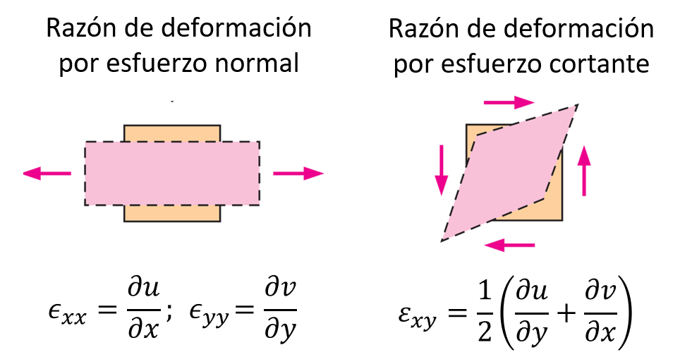

5. Ecuación de Navier-Stokes#
5.1. Introducción#
En la unidad anterior dedujimos las ecuaciones de conservación de masa y momento lineal en su forma diferencial. Estas ecuaciones se aplican para cualquier tipo de fluido en régimen laminar.
En el caso de un fluido newtoniano, podemos realizar aún más simplificaciones.
El resultado es la conocida ecuación de Navier-Stokes, que constituye la base fundamental de la mecánica de fluidos. Técnicamente, cualquier problema de la mecánica de fluidos asociado a las condiciones incompresible-newtoniano puede ser caracterizado a partir de la solución de la ecuación de Navier-Stokes.
Sin embargo, la complejidad asociada al número de incógnitas, variables independientes, y sobre todo a su condición no-lineal, hacen imposible su solución, salvo en casos particulares que revisaremos al final de la unidad.
5.2. Esfuerzo y deformación de un fluido#
Previo a derivar las ecuaciones de Navier-Stokes, es importante discutir algunas formulaciones básicas respecto a la tasa de deformación y su relación con los esfuerzos para un fluido newtoniano.
5.2.1. Tensor de tasa de deformación (\(\bar{\varepsilon}\))#
Un elemento fluido puede ser sometido a dos tipos de razones de deformación:
{kind=link}
En tres dimensiones, podemos representar todos las razones de deformación usando el tensor de la tasa de deformación:
Los elementos de la diagonal (\(\varepsilon_{xx}\), \(\varepsilon_{yy}\) y \(\varepsilon_{zz}\)) representan la deformación por esfuerzos normales. El resto de los elementos, corresponde a la deformación por esfuerzos cortantes.
Usando el operador \(\nabla\), el tensor de deformación se puede representar como:
5.2.2. Tensor de esfuerzos#
Si el fluido es newtoniano, el tensor esfuerzos de corte es directamente proporcional a la razón de deformación:
done \(\mu\) es la viscosidad dinámica del fluido
5.3. Ecuación de Navier-Stokes#
5.3.1. Derivación de la ecuación principal#
Comenzamos este análisis a partir de la ecuación de conservación de momento lineal en su forma diferencial, o ecuación de Cauchy:
En el caso de un fluido newtoniano, es posible demostrar que:
En el caso particular de un flujo incompresible, la ecuación de coservación de masa es:
Para este caso particular, tenemos entonces:
Reemplazando este resultado en la ecuación de Cauchy:
Esta es la ecuacion de Navier-Stokes. Corresponde a una ecuación diferencial parcial de segundo orden, no lineal y no estacionaria.
Notar que la ecuación de Navier Stokes es una ecuación vectorial y por lo tanto, está conformada por 3 ecuaciones. Sin embargo, el problema de fluidos tiene 4 incognitas \(u\), \(v\), \(w\) y la presión \(p\).
Para poder resolver este problema, necesitamos una cuarta ecuación la cual corresponde a la continuidad para flujo incompresible, \(\nabla\cdot \vec{V} = 0\).
5.4. Soluciones de N-S y continuidad#
A pesar de su complejidad, existen problemas sencillos donde las ecuaciones de Navier-Stokes en conjunto con la ecuación de continuidad tienen solución analítica.
Para poder resolver estas ecuaciones es fundamental aplicar las condiciones iniciales y de borde adecuadas. Si analizamos estas ecuaciones involucradas, notamos que tenemos derivadas de primer orden en el tiempo (\(t\)) y derivadas de segundo orden en el espacio (\(x\), \(y\), \(z\)). En general, necesitaremos:
Una condición inicial
Dos condiciones de borde en \(x\), \(y\), \(z\).
Considerando las incognitas \(u\), \(v\), \(w\) y \(p\), esto nos da como resultado 4 condiciones iniciales y 12 condiciones de borde.
En la práctica, sin embargo, es común aplicar supuestos que permiten reducir el tamaño de la ecuación diferencial.
5.4.1. Supuestos típicos#
5.4.1.1. Flujo estacionario#
Este supuesto asume que la variación temporal es despreciable (\(\frac{\partial}{\partial t} = 0\)). Las ecuaciónes se simplifican a:
Ecuación de continuidad flujo incompresible
Navier Stokes
5.4.1.2. Flujo bidimensional#
Este supuesto es útil para reducir una de las tres componentes de la velocidad. En coordenadas cartesianas, la bidimensionalidad permitiría, por ejemplo, ignorar la componente \(z\), es decir \(w = 0\) y \(\frac{\partial}{\partial z} = 0\). Las ecuaciones de continuidad y Navier-Stokes se simplifican a:
Ecuación de continuidad flujo incompresible
Navier-Stokes
Notar que, en este caso, si la gravedad actúara en la dirección \(\hat{z}\) (es decir, \(g_z \neq 0\)), la componente \(z\) de las ecuaciones de Navier-Stokes quedaría como:
Que corresponde a la ecuación para presión hidrostática.
El razonamiento análogo en coordenadas cilindricas se denomina, flujo con simetría axial o axial-simétrico.
En este caso, \(u_\theta = 0\) y \(\frac{\partial}{\partial \theta} = 0\), y las ecuaciones se simplifican a:
Ecuación de continuidad flujo incompresible
Navier-Stokes
5.4.1.3. Flujo desarrollado#
Este supuesto se aplica para despreciar la tasa de cambio en la dirección paralela a alguna de las componentes de velocidad.
El concepto nace del flujo en tuberías, donde la tasa de cambio de la componente longitudinal, \(\frac{\partial u_z}{\partial z} \approx 0\) despues de la región de desarrollo del flujo.
{kind=link}
Sin embargo, se puede aplicar a otros problemas como veremos más adelante.
5.4.2. Condiciones de borde típicas#
Una vez establecidos los supuestos, es necesario implementar las condiciones de borde necesarias para resolver el problema.
Las más comunes son.
{kind=link}
La condición de interface constituye una condición generalizada del contacto de un fluido con una frontera mobil.
Por ejemplo, si el fluido está en contacto con una pared móvil a velocidad \(V_\mathrm{pared}\), la condición de borde es:
donde \(y_0\) es la posición de la interface entre el fluido y la pared.
El caso de una pared fija (\(V_\mathrm{pared} = 0\)), obtenemos la condición de no-deslizamiento:
5.4.3. Flujos característicos#
Existen 3 problemas característicos que pueden ser resueltos analiticamente a partir de las ecuaciones de continuidad y Navier-Stokes.

La solución a estos problemas se verá en la sesión de cátedra.
5.5. Referencias#
Çengel Y. A. y Cimbala M. J. Mecánica de Fluidos: Fundamentos y Aplicaciones, 4ta Ed., McGraw Hill, 2018
Capitulo 9. Análisis diferencial de flujo de fluidos
Capitulo 10. Soluciones aproximadas de la ecuación de Navier-Stokes
White F. M. Mecánica de Fluidos, 5ta Ed., McGraw Hill, 2004
Capítulo 4. Relaciones diferenciales para una partícula fluida